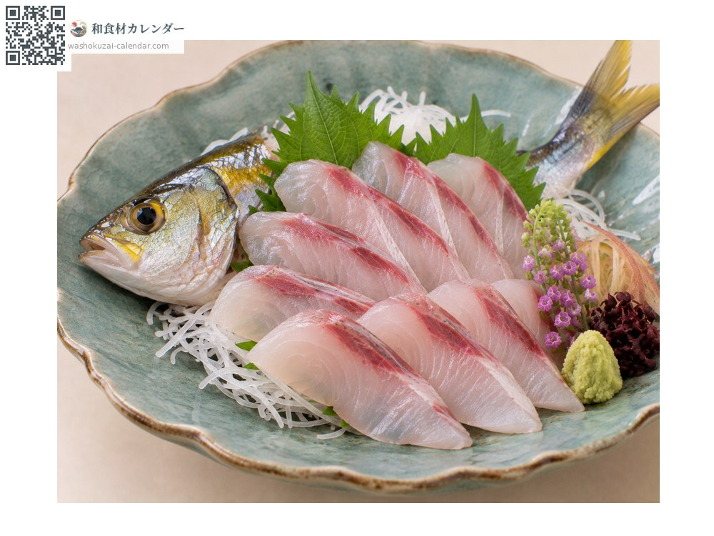
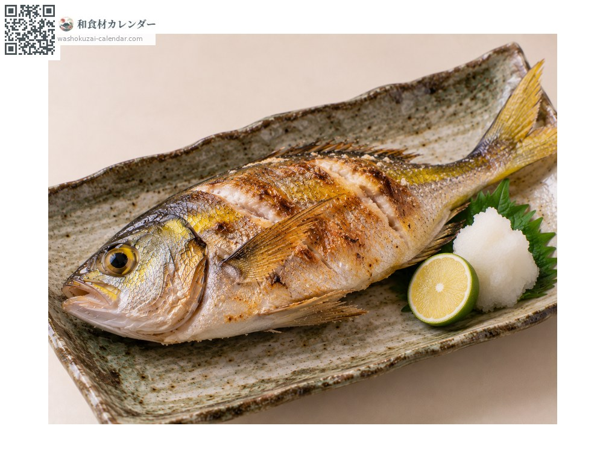
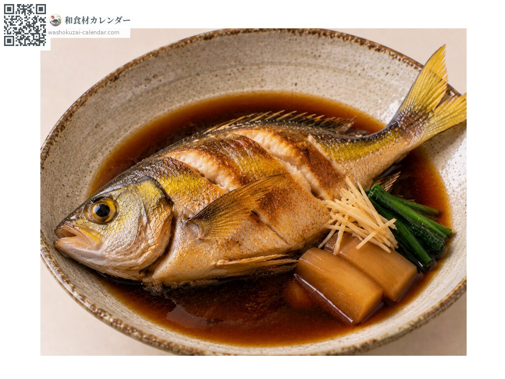

魚介
ウメイロ
うめいろ
別名・別表記梅色、umeiro
旬は6月・7月・8月・9月

旬の時期
1月
2月
3月
4月
5月
6月
7月
8月
9月
10月
11月
12月
旬出回り
調理法

刺身
上品な白身で脂がのる。血合いが美しい。

塩焼き
シンプルに焼いて素材の味を楽しむ。

煮付け
甘辛く煮る。身がほろりとほどける。
選び方
背の黄色みが鮮やかなもの。体に張りがあり、目が澄んでいるもの。
保存方法
内臓を取って冷蔵。2日以内に使い切る。
主な産地
豆知識
背から尾にかけての黄色が梅の実の色に似ることが名前の由来。南日本の磯で獲れ、地域では高級魚として扱われる。